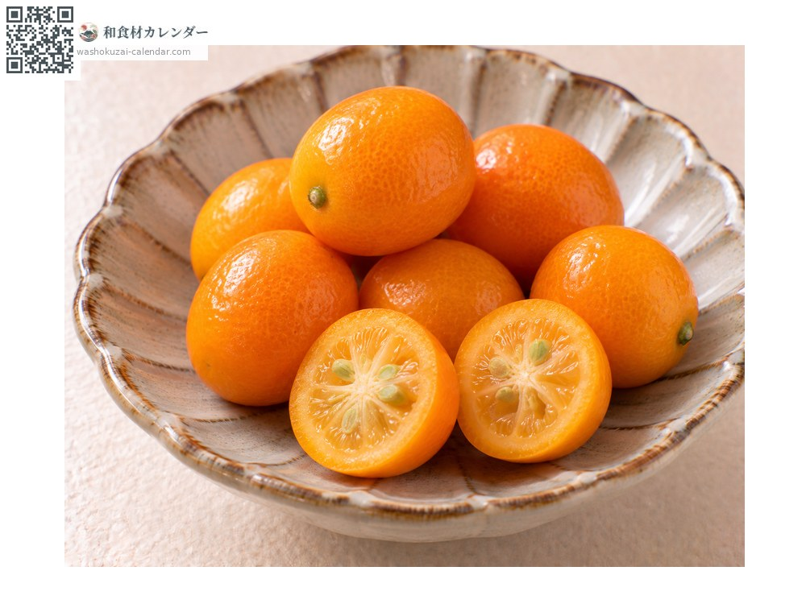
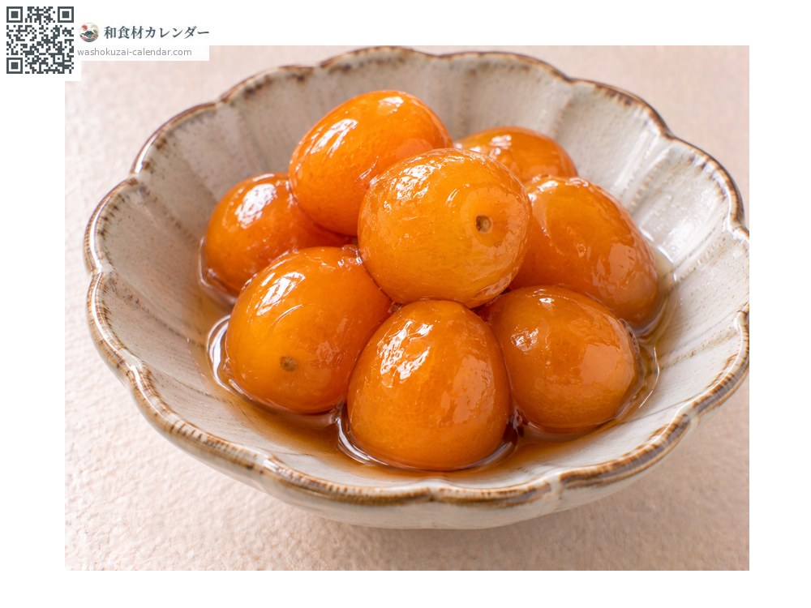
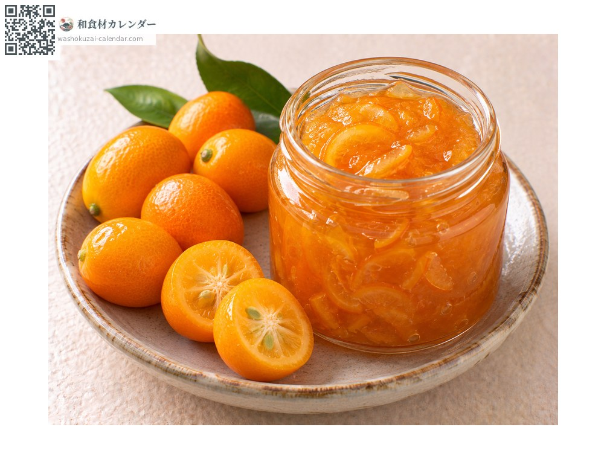
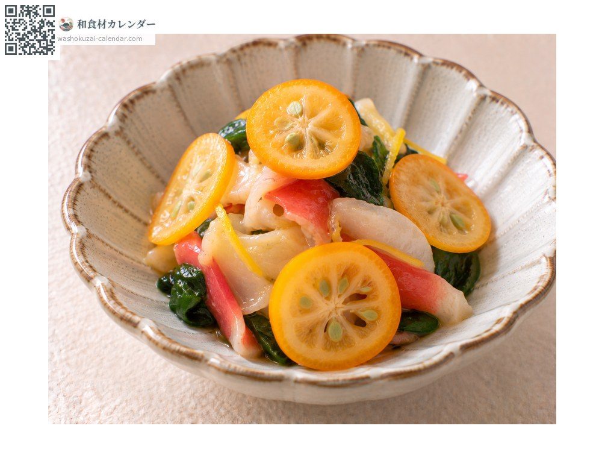

Fruit
Kumquat
金柑 きんかん kinkan
Also known askinkan
At its best in Jan, Feb, Mar

When it is at its best
Jan
Feb
Mar
Apr
May
Jun
Jul
Aug
Sep
Oct
Nov
Dec
In seasonAvailable
How to cook

Eaten fresh
Eaten whole, skin and all; the skin is sweet and the flesh tart.

Kanroni
Deseeded and simmered in sugar, and served among New Year dishes.

Jam
Chopped and reduced, keeping a faint bitterness.

As a garnish
Sliced thin and laid beside a dish, for colour.
How to choose
Glossy skin in a deep orange, plump and unblemished.
Storage
A few days at room temperature. For longer, bag and refrigerate.
Main areas
Good to know
Unusually among citrus, it is eaten whole: the sweetness is in the skin and the acidity in the flesh. Tamatama from Miyazaki is a brand meeting standards including sixteen degrees of sugar. Long held to soothe the throat, it is also used in throat lozenges.